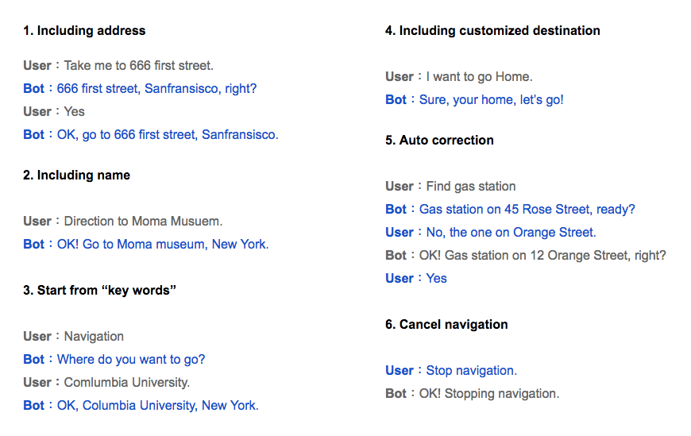
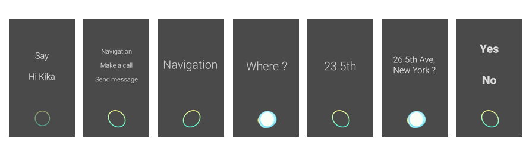

Background
In the loud environments, such as inside a moving vehicle, a regular phone's microphone is less effective for voice control. Kika developed a noise-cancellation microphone built into a USB-charging cable to solve this problem. With Kika's cutting-edge AI engine, the KikaGo application created a truly hands-free means for communications inside a car environment that is also elegant and simple.
Challenges - Voice control only
At the time of KikaGo’s development, there were no hands-free, in-car communications on the market. Unlike existing voice-assisted agents like Siri, KikaGo was designed specifically for voice interaction and hands-free communication so that users would be able to interact without seeing or touching the screen. Because of this, the design flow would need to be more abstract and difficult than the conventional user interface, which includes a visual component, and designers would need to spend more time testing the voice interaction, as opposed to the visual interaction design.
Starting from dialogs
What are the context in the conversation?
From creating dialogs scripts between users and bot,we could instantly see what we should build in the conversation and what corner issues might show up during the conversation.

How does KikaGo interact with users by talking?
Transforming the dialogs scripts into a logical conversational user flow could easily help us to map every steps in the conversation. We created the user flow specifically for voice user interface, separating the visual interaction wireframes and conversation logic.

Designing for drivers
Wireframing for the conversational interaction on the screen
After creating the conversation flow, we map the conversations by wireframes. We could imagine how drivers will perceive and which information should be display on the screen.

Final design
For the UI design, we need to consider larger font, icons, darker background, and only show the key information. These designs could be much safer than applying the regular mobile interface while driving.

How KikaGo works in the real world?
- Role: UX designer
- Type: Voice User Interface for Automobile
- Award: CES 2018 Innovation Award Winner of In-Vehicle Audio/Video, Tech for a Better World, Software and Mobile Apps, and Smart Home
- KikaGo Official Home Page
- KikaGo 2018 CES Interview